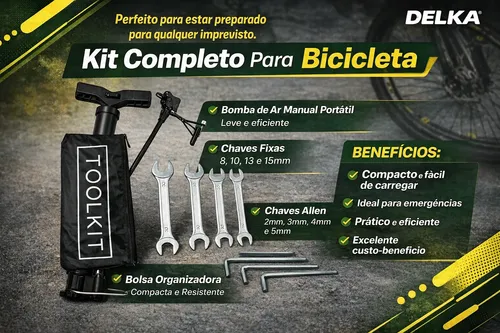

Perguntas frequentes
Com que frequência devo lubrificar a corrente?
Em uso diário, a cada 200 km ou uma vez por mês, o que vier primeiro. Se a corrente estiver fazendo barulho ou enferrujada, lubrifique antes disso.
Os freios estão fazendo barulho, o que pode ser?
Geralmente é a pastilha ou sapata de freio desalinhada, tocando na roda de forma irregular. Também pode ser sujeira acumulada no aro — limpe com um pano úmido e reavalie.
Posso trocar o pneu sozinho, sem ferramentas especiais?
Sim, com um kit básico de manutenção (chaves de câmbio para pneu, bomba de ar e, se possível, uma câmara de ar reserva) dá para trocar um pneu furado em poucos minutos, mesmo na rua.
Checklist de revisão

Progresso da revisão completa da bicicleta:
Pressão atual do pneu traseiro (em relação ao recomendado pelo fabricante):
Pneu murcho demais aumenta o risco de furo; calibrado demais deixa o passeio desconfortável.
Agendar revisão da bicicleta
Preencha os dados abaixo para organizar a próxima revisão da sua bike.